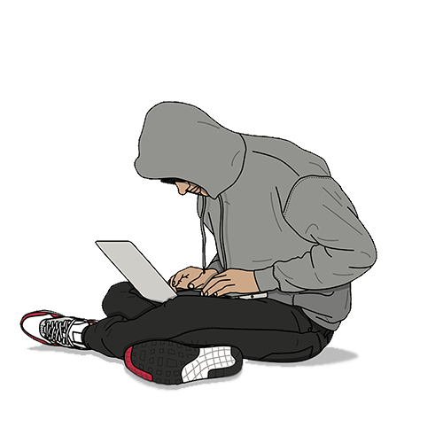

Когда я смотрел сериал "Киберсталкер", мне понравилась сцена взлома веб-камер, ну и конечно же я решил это повторить. Начал смотреть видео и читать на эту тему, в итоге я не только научился взламывать камеры, но и узнавать пароли от сети, к которым они были подключены. Этим способом можно не только наблюдать, но и управлять камерой, менять пароль камеры, получать электронную почту к которой она привязана.
1. Переходим на сайт Shodan
2. Открываем поиск и пишем "realm='GoAhead', domain='81'"
3. Просматриваем даты входов в камеру и выбираем самую близкую к нынешней дате
4. После того, как нашли подходящий копируем İP-адрес
5. Вставляем в адресную строку Google, добавляя в конец ":81"
6. После приписываем к ссылке 'system.ini?loginuse&loginpas'
7. Заходим в папку со скачанным файлом и переименовываем его на "system.txt"
8. Открываем файл, там нас встретят логин и пароль
9. Повторяем 5 шаг и прописываем данные